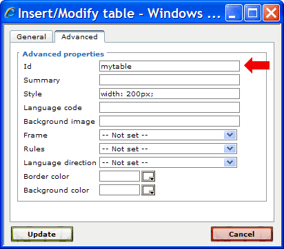

1.4.2. Referencing images and tables
Besides referencing sections you can also reference images and tables. Before we can create a link that references an image or table, we first have to assign an ID to the image or table that shall be referenced. In Section 1.3.3, “Tables” and Section 1.3.4, “Images” you have already inserted images and tables into a content-node. Open the content-editor for this content-node.
Figure 1.4.10. Example: Content with an image and a table
We now want to assign the ID value "mypic" to the image. Therefore select the image (i.e. click the image with the left mouse button) and click the "Insert/edit image"  button. Switch to the "Advanced" tab of the opened dialog and enter the value "mypic" into the "Id" field:
button. Switch to the "Advanced" tab of the opened dialog and enter the value "mypic" into the "Id" field:
Figure 1.4.11. Setting the image ID
Click "Update" to save the settings and to close the dialog.
The next step is to assign the ID value "mytable" to the table. Therefore select the table, e.g. by placing the cursor within a table-cell, and click the "Insert/edit table"  button. Enter the value "mytable" in the "Id" field of the opened dialog:
button. Enter the value "mytable" in the "Id" field of the opened dialog:

Figure 1.4.12. Setting the table ID
Click "Update" to accept the settings and to close the dialog.
Now that we have assigned the ID values, we can create links to the image and table. Because the system assures that all assigned ID values are unique within the complete product documentation, you could also reference the image or table from any place within the product documentation.
Nevertheless, in this example we create the link within the same content-node that contains the image/table. Scroll to the end of the content-node within the content-editor and add the sentence "See this image and this table.". We now want to transform the text "this image" and "this table" to link-elements that reference the image and table. To do this select the text "this image"  and click the "Insert/edit link"
and click the "Insert/edit link"  button
button  .
.
Figure 1.4.13. Creating a link to an image
In the opened link dialog, enter the link URL "#mypic" . Optionally, check the "Use target title" checkbox. If this option is checked, then the link text ("this image") will be replaced by the title of the referenced element during the publication export process (remember that we have assigned a title to the referenced image - see Section 1.3.4, “Images”).
In general, the link URL for referencing content-elements inside a content-node must be entered in the format
#<id>
where <id> is the ID value which is assigned to the target element.
Repeat the steps for the text "this table", but this time enter the link URL "#mytable".
To see if the links work, save the content and close the content-editor. The preview-area should be automatically updated and display the references as clickable links.

Figure 1.4.14. Links in the preview area
When you click on one of the links, the preview area should scroll to the referenced image or table.
Click the PDF-preview  button, to check that the link text is correctly replaced by the title of the referenced image/table during the export process:
button, to check that the link text is correctly replaced by the title of the referenced image/table during the export process:
Figure 1.4.15. Link text replacement in PDF output
Note:
The content-elements that have an ID value assigned are listed as child-nodes of the content-node. In our example, the content-node has now two sub-nodes, one for the image with ID "mypic" and one for the table with ID "mytable", as shown in the screenshot below:
Figure 1.4.16. Child-nodes of a content-node